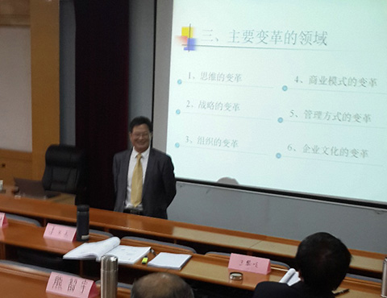

聚焦才能成功
张九元老师
来源：中华龙集团教育培训中心 点击:190次
职业生涯：
38年的职业生涯是这样度过的：6年政府公务员，8年大型国企中层管理者，4年小型国企法人代表，3年高校理论研究者，17年咨询公司顾问。
原创课程文章
大多数公司改革尝试失败，不在于他们试图改变的东西过少而在于他们想要改革的东西太多，以至于不知道先做什么，后做什么。
尽管我们描述的这种情形只是反映个别公司的管理活动，但这种情形你一定似曾相识，因为它是众多公司的代表。在竭力寻求更有效的组织模式的过程中，管理者们在几乎无序的状态中进行了一系列没有联系的规划活动，因此，当基层经理们面对交给他们的多项而没有持久性的优先发展计划时感到茫然无措，就不足为怪了。
与此相反，那些最成功地将公司转变成更富灵活性和应变性的组织的公司似乎更清楚他们所要达到的目标，并且非常专注于相对单一的目标及探索实现目标的行为过程。尽管不可避免地用直觉方式和根据各公司具体情况来履行这一过程，但回顾比较一下就会发觉，这些获得成功的公司的改革之路是十分相似的。
每个活生生的实践者都是一种僵化理论的囚徒。这句话蕴含着很多真理。虽然企业管理者们不相信理论，而是与“现实世界”联系密切，但是，他们仍不知不觉地成为被超常规力量所驾驭的一套旧观念的牺牲品。
许多现代企业管理活动都建立在关于公司行为的研究和理论的基础上，由于经济学家不喜欢也不信任公司，因此他们构筑的理论常常形成了一种非道德性的管理原理，形成该原理的前提是高度实用化的关系，一方面建立在公司和社会之间，另一方面建立在公司及其员工之间。在日常行为中，大多数管理者按这些原理的条件框框进行管理，更多的人只是下意识地遵循这些现有规范，而不是有意识地去理解或领会这些原理中蕴含的观念或道理。
在个性化公司的结构和管理过程中存在着一种完全不同的管理理论，这种理论建立在人的自然属性和现代社会组织的作用等完全不同的观点的基础上，从而得出一些完全不同的观念，包括社会中公司的作用，雇员及雇主之间的关系，以及有关管理者的作用及其作为一种职业所应尽的义务。总之，它在个人、公司和社会之间赋予一种完全不同的道德契约，正是这种新的道德契约，而不是任何其他具体的经营特征构成了个性化公司的精髓。
如果你什么都想干，结果可能什么也干不成，企业家和职业经理人们都要永远记住这一点。